GIT - system kontroli wersji
Tworzymy projekt
Na początek coś o niezbyt skomplikowanej strukturze plików w katalogu:
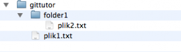
W języku "GITowym" projekt, nad którym pracujemy jest nazwany working tree. Wszystko co musimy zrobić, aby objąć projekt kontrolą wersji jest użycie komendy:
1 > git init
Spowoduje to utworzenie ukrytego folderu .git, w którym umieszczane są informacje o naszym projekcie.
W większości systemów kontroli wersji, przechowywanie informacji o plikach umiejscowią się w dwóch miejscach. Bezpośrednio w projekcie lub w centralnym repozytorium.
GIT wprowadził coś nowego – warstwę pośrednią pomiędzy projektem, a repozytorium: Staging area (lub Staging Index). W indeksie tym przechowywane są informacje o całym naszym projekcie, tu kontroluje się zmiany i w przypadku, gdy jesteśmy ze zmian zadowoleni to je commitujemy do repozytorium. Daje to nam taką korzyść, że nie zaśmiecamy ani projektu, ani repozytorium zbędnymi informacjami.
Staging index
Aby wprowadzić plik do indexu wystarczy wydać komendę:
1 > git add
Warto zauważyć, że index przechowuje informacje o wszystkich plikach, nie tylko o plikach zmienionych.
Dodajemy nasz plik do projektu:
1 > git add plik1.txt
Oraz cały folder
1 > git add folder1
Teraz wszystkie pliki, które posiadamy znajdują się w Staging area
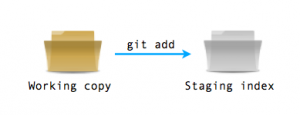
W każdej chwili, możemy zobaczyć, co się zmieniło w naszym projekcie od ostatniego zatwierdzenia (commit) wydając komendę:
1 > git status
Pokazywany nam jest raport ze zmianami w naszym working tree. Pliki mogą być wymienione w dwóch oddzielnych sekcjach raportu: pliki zmienione i dodane do staging area oraz pliki zmienione i nie dodane do staging area.
Zatwierdzanie zmian
Gdy wszystkie zmiany, których dokonaliśmy są OK musimy je zatwierdzić. Dokonujemy tego poleceniem:
1 > git commit
Otworzy się edytor, gdzie należy wpisać opis commitu. Jeżeli tytuł jest krótki, możemy go wpisać od razu przy commicie za parametrem ' -m '. Na przykład:
1 > git commit -m "initial commit"
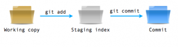
W GIT nie nadaje się liczbowych numerów rewizji, tak jak ma to miejsce np. w Subversion. Tutaj każdy commit jest określony kluczem SHA wyliczanym na podstawie zawartości working tree. Dla przykładu w moim prostym projekcie pierwszy commit otrzymał identyfikator:
52e0188f4b5f082427cc9df07451cc5daa169f63
Może na początku wydawać nam się dziwne takie identyfikowanie wersji, ale jest skuteczne. Zwłaszcza, że musimy pamiętać o architekturze systemu git. Tutaj nie ma centralnego repozytorium i można prowadzić dwa równoległe.
Gdy po jakimś czasie zdecydowalibyśmy się na synchronizację to byłby problem, bo w każdym repozytorium znalazłyby się rewizje 1, 2, 3 itd. ale zawartości tych rewizji byłyby różne. Aby zapobiec takim sytuacjom wprowadzono klucz SHA jako identyfikator.
Co jednak jeżeli w przyszłości chcielibyśmy cofnąć nasz projekt do któregoś momentu? Czy musimy podać cały klucz? Otóż nie. Wystarczy podać tyle pierwszych znaków ile wystarczy na jednoznaczne zidentyfikowanie.
W przypadku na przykład gdy mamy dwie rewizje i klucz każdej zaczyna się od innej literki (albo cyferki) to wystarczy podać pierwszy znak klucza aby jednoznacznie zidentyfikować. Niepisaną regułą jest podawanie 7-iu znaków do identyfikacji rewizji. Jest to wystarczająca w większości przypadków liczba jednoznacznie identyfikująca. Tyle też znaków jest podawanych po zcommitowaniu zmian w raporcie.
Project
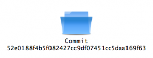
Commit tak samo jak Staging area jest "stemplem" całego working tree – są tam informacje o wszystkich plikach i folderach znajdujących się w danym momencie, a nie tylko te, które się zmieniły.
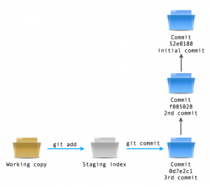
Podsumowując: cała operacja kontroli wersji wykonywana jest w trzech krokach: Pierwszym krokiem jest zmiana zawartości working tree, np. dodanie pliku, usunięcie pliku lub edycja pliku. Drugim krokiem jest zatwierdzenie tej zmiany i przeniesienie jej do Staging area poprzez wykonanie komendy git add. Trzecim krokiem jest zatwierdzenie zmian poprzez git commit i przeniesienie całego Staging index do Commit.
Co to nam daje?
Wyobraźmy sobie, że pracujemy z większym projektem. Dokonaliśmy już kilkadziesiąt modyfikacji i nagle otrzymujemy wiadomość, że w jednym z plików jest poważny błąd. Naprawiamy go, stage’ujemy go (git add) a następnie commitujemy
poprawkę. Po czym spokojnie wracamy do naszej pracy, bo reszta plików, którą zmieniliśmy podczas naszej dotychczasowej pracy została nietknięta w naszym working tree. Jak dokonalibyśmy tego w subversion? Musielibyśmy się nakombinować
z filelock albo z branchami. Tu mamy to out-of-the-box.
Może wydawać się trudne prowadzenie w ten sposób repozytorium, ale po krótkim czasie przyzwyczajamy się, a po kilku chwilach potem nie będziemy potrafili bez tego żyć :)
Istnieje także ułatwienie aby oba kroki dokonać za jednym razem. Podczas commita dodajemy parametr -a i wszystkie pliki, które zostały zmienione (ale nie te co zostały dodane) automatycznie przenoszone są do Staging index i wykonywany jest commit.
Sprawdzanie zmian
Aby zobaczyć co działo się w naszym repozytorium wystarczy wykonać komendę:
1 > git log
Wyświetli nam się lista zmian, rozpoczynając od ostatniej. Podane są informacje o symbolu commita, autorze, dacie i wiadomość, która została wpisana wraz z commitem.
Dodanie parametru --pretty=oneline pokaże w jednej lini klucz sha i message, a dodanie jeszcze parametru --abbrev=commit skróci klucz do 7-miu znaków.
Przykład z poznanymi komendami GIT-a
Myślę, że w tym miejscu należy się jakiś solidny przykład do komend, które właśnie poznaliśmy. Zatem wracając do przykładu z początku artykułu – pracujemy nad bardzo ubogim projektem posiadającym jeden plik w folderze głównym oraz jeden folder z drugim plikiem.
Usuwamy wszystkie pliki i katalog, z którymy dotychczas pracowaliśmy, i ponownie tworzymy strukturę katalogu:
Wykonujemy komendę:
1 > git init
aby zainicjować kontrolę wersji. Zaraz potem wykonujemy
1 > git status
aby zobaczyć co się zmieniło. Otrzymujemy:
1 ... 2 # Untracked files: 3 # (use "git add ..." to include in what will be committed) 4 # 5 # folder1/ 6 # plik1.txt
Czyli zarówno plik jak i folder nie są pod kontrolą wersji.
Dodajmy plik:
1 > git add plik1.txt
i sprawdźmy status raz jeszcze:
1 ... 2 # Changes to be committed: 3 # (use "git rm --cached ..." to unstage) 4 # 4 # new file: plik1.txt 5 # 6 # Untracked files: 7 # (use "git add ..." to include in what will be committed) 8 # 9 # folder1/
W tej chwili gdybyśmy wykonali commit – dodałoby do commita tylko plik a nie folder. Nie chcemy tego (na razie), więc dodajmy także folder.
1 > git add folder1 2 ... 3 # Changes to be committed: 4 # (use "git rm --cached ..." to unstage) 5 # 6 # new file: folder1/plik2.txt 7 # new file: plik1.txt
i zatwierdzamy zmiany jako "inital commit" czy jak tam chcemy nazwać:
1 > git commit -m "initial commit"
Od razu otrzymujemy odpowiedź:
1 [master (root-commit) 2 68c7006 ] initial commit 3 ... 4 1 files changed, 5 1 insertions(+), 6 0 deletions(-)
widać nazwę commita oraz 7znaków klucza SHA. Sprawdźmy status:
1 > git status 2 ... 3 nothing to commit (working directory clean)
Czyli jest ok. Sprawdźmy zatem staging w praniu.
Zmieńmy zawartość obu plików (
plik1.txt i plik2.txt ) i sprawdźmy status:
1 ... 2 # modified: folder1/plik2.txt 3 # modified: plik1.txt
teraz jeden plik dodajmy do staging area i zcommitujmy:
1 > git add plik1.txt 2 > git status 3 ... 4 # modified: plik1.txt 5 # > 6 # Changed but not updated: 7 # 8 # modified: folder1/plik2.txt 9 ... 10 > git commit -m "2nd commit" 11 [master 4741a87] 2nd commit 12 1 files changed, 1 insertions(+), 1 deletions(-) 13 > git status 14 ... 15 # Changed but not updated: 16 # 17 # modified: folder1/plik2.txt
Czyli jest tak jak zamierzaliśmy – w commicie znalazł się tylko plik1.txt – plik2.txt pozostał dalej w working tree. Zmieńmy ponownie plik1.txt i dodajmy do staging area – wrócimy do poprzedniej sytuacji...
1 > vim plik1.txt 2 > git add plik1.txt 3 > git status 4 # Changes to be committed: 5 # modified: plik1.txt 6 # 7 # Changed but not updated: 8 # modified: folder1/plik2.txt
czyli posiadamy dwa edytowane pliki, ale jeden tylko w staging index. Spróbujmy zatwierdzić je oba razem:
1 > git commit -a -m "3rd commit" 2 [master 1ed35d3] 3rd commit 3 2 files changed, 2 insertions(+), 1 deletions(-) 4 > git status 5# nothing to commit (working directory clean)
Nice… dodało oba pliki, ten który był w staging area oraz drugi, który nie był. Pamiętajmy, że w przypadku, gdy dodamy nowy plik to musimy go ręcznie dodać do staging index.
Rzućmy okiem na log naszego repozytorium:
1 > git log --pretty-oneline --abbrev-commit 2 1ed35d3 3rd commit 3 4741a87 2nd commit 4 68c7006 initial commit
Możemy także z ciekawości zerknąć na to co wyświetli nam samo git log
Skoro przyjęliśmy już jakiś zakres wiedzy idziemy dalej:)
Cofanie zmian
Co jednak jeżeli chcemy cofnąć zmiany, które wykonaliśmy na plikach? Wszystko zależy od tego jak daleko chcemy się cofnąć. Inaczej jest gdy zmiany nie zostały dodane do staging area a inaczej, jeżeli pliki już są dodane.
Jeżeli pliki nie są w staging area wystarczy wykonać komendę:
1 > git checkout nazwa_pliku_lub_folderu
Sprawdźmy:
1 > git status 2 nothing to commit (working directory clean) 3 > echo "jakiś tekst" >> plik1.txt 4 > git status 5 # Changed but not updated: 6 # 7 # modified: plik1.txt 8 > git checkout plik1.txt 9 > git status 10 nothing to commit (working directory clean)
Jeżeli nie podamy nazwy pliku to zostaną cofnięte wszystkie zmiany w naszym working tree
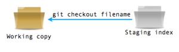
Jeżeli pliki są dodane już do staging area, musimy je najpierw z niego "wyjąć" a potem dopiero cofnąć zmiany. Do tego służy komenda:
1 > git reset HEAD nazwa_pliku
Jeżeli nie podamy nazwy pliku to zostaną zresetowane wszystkie. Dopiero jak plik zresetujemy to możemy go cofnąć poprzez git checkout HEAD odnosi się zawsze do ostatniego commita
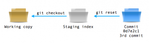
Przykład
1 > git status 2 nothing to commit (working directory clean) 3 > echo "napis" >> plik1.txt 4 > git add plik1.txt 5 > git status 6 ... 7 # Changes to be committed: 8 # 9 # modified: plik1.txt 10 > git reset HEAD plik1.txt 11 > git status 12 # Changed but not updated: 13 # 14 # modified: plik1.txt 15 > git checkout plik1.txt 16 > git status 17 nothing to commit (working directory clean)
Cofanie zmian zatwierdzonych
Zawsze podczas pracy jest tak, że trzeba się cofnąć do poprzedniego commita. Jeżeli będziemy do tego zmuszeni to dokonamy tego poprzez:
1> git revert klucz_SHA_commita_do_ktorego_sie cofamy
(Oczywiście, że klucz wystarczy podać w postaci 7-io zakowej. ) Co się wtedy stanie? Technicznie nie cofamy się lecz idziemy do przodu – zostaje utworzony nowy commit, który jest identyczny wraz z commitem do którego się odnosimy:
1 > git log --pretty=oneline --abbrev-commit 2 1ed35d3 3rd commit 3 4741a87 2nd commit 4 68c7006 initial commit 5 > git revert 1ed35d3 6 > git log --pretty=oneline --abbrev-commit 7 3503b43 Revert "3rd commit" 8 1ed35d3 3rd commit 9 4741a87 2nd commit 10 68c7006 initial commit
Nic nie stoi na przeszkodzie, abyśmy cofnęli się dalej niż do ostatniego commita, jednak to może powodować problemy z synchronizacją (a o tym jak je rozwiązywać będzie później). Cofamy się do commita "2nd commit":
1 > git revert 4741a87 2 > git log --pretty=oneline --abbrev-commit 3 d4976a7 Revert "2nd commit" 4 3503b43 Revert "3rd commit" 5 1ed35d3 3rd commit 6 4741a87 2nd commit 7 68c7006 initial commit
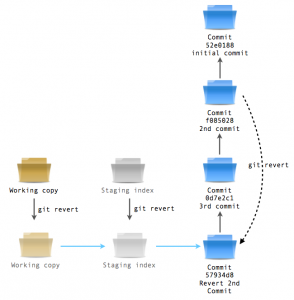
Porównywanie wersji
Jeżeli chcemy obejrzeć różnice między naszym working tree a commitem używamy komendy:
1 > git show 2 76a7c8c
używając oczywiście klucza commita, do którego chcemy się porównywać.
Jeżeli jednak chcemy obejrzeć różnice pomiędzy dwoma różnymi commitami to używamy komendy:
1 > diff adf8342.. 2 ...
Gdy chcemy obejrzeć całą historię zmian, która nastąpiła w naszym projekcie to używamy:
1 > git log -p
Tagowanie
Głównym problemem Subversion jest to, że tagowanie repozytorium polega na kopiowaniu całego repozytorium w inne miejsce. Przy dużych projektach może to być problem ze względu na szybko rozrastające się repozytorium.
W GIT’cie tego nie ma. Gdy chcemy robić taga, to po prostu oznaczamy jednego z commitów i nie tracimy miejsca na dysku. Tagowanie jest przydatne o tyle, że możemy używać taga zamiast klucza SHA odwołując się do tego konkretnego
commita. W jaki sposób tagujemy? Jeżeli chcemy otagować ostatniego commita wystarczy podać:
1> git tag nazwa_taga
Jeżeli jednak chcemy otagować commita, który nie jest ostatnim, to musimy podać jego klucz SHA na końcu:
1 > git tag nazwa_taga 2 7ad87cc
Naturalną czynnością jest tagowanie kolejnych wersji naszego projektu, np.
> git tag 0.97
Jak już wspomniałem, można używać tagów zamiast kluczy SHA, np.:
> git diff wersja_1..wersja_1.2
porównuje commity otagowane kolejno "wesja_1" oraz "wersja_1.2"
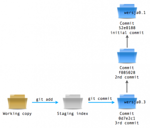
Praca równoległa
Pracując w większych zespołach nad jednym projektem zdarza się, że każdy z członków zespołu pracuje nad inną funkcjonalnością. Są jakoby prowadzone dwie (lub więcej) równoległych ścieżek powstawania projektu. Oba te ‚podprojekty’ będą
połączone w całość. Może być nawet tak, że chcemy „wypróbować” czy np. nowa technologia będzie dobrze działać z naszym projektem. Nie warto wtedy robić tego w głównej ścieżce powstawania tylko wypada zrobić równoległą.
Takie równoległe nazywa się gałęziami (branches). Branchowanie to rozdzielanie projektu na kilka równoległych ścieżek powstawania, gdzie na koniec oba branche mogą zostać połączone z powrotem w jedną ścieżkę (merging). Automatycznie
gdy inicjujemy projekt powstaje branch o nazwie master. Jest to główna ścieżka powstawania projektu. Mogliśmy zauważyć tą nazwę np. podczas dokonywania commitu. Jeżeli chcemy zobaczyć który branch jest aktualny wydajemy komendę:
> git branch -v
Ukaże nam się informacja o nazwie brancha, kluczu commita i jego nazwie, np.:
* master d4976a7 Revert "2nd commit"
Listę branchy możemy w każdej chwili zobaczyć wydając komendę:
> git branch
gwiazdka przy nazwie oznacza aktualny branch
Tworzenie oddzielnej gałęzi
Stworzenie nowego brancha sprowadza sie do wydania komendy git branch wraz z jego planowaną nazwą oraz kluczem commita, który ma być jakby punktem startowym dla tej gałęzi. Jak zawsze, jeżeli nie podamy klucza to będzie użyty aktualny commit.
1 > git branch slave 2 > git branch 3 * master 4 slave
Przełączanie się między branchami
Aby przełączyć się pomiędzy gałęziami musimy użyć komendy git checkout z nazwą brancha którego chcemy użyć.
1 > git branch 2 * master 3 slave 4 > git checkout slave 5 Switched to branch 'slave' 6 > git branch 7 master 8 * slave
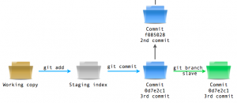
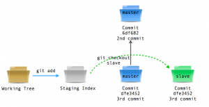
Teraz wszystkie zmiany których dokonamy będą zatwierdzane w tej gałęzi
1 > echo "jestem w branchu" >> plik1.txt 2 > git commit -a -m "4th commit" 3 > git branch -v 4 master d4976a7 Revert "2nd commit" 5 * slave 6 36e4883 4th commit
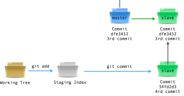
Przełączając się między gałęziami aktywujemy ostatni commit tej gałęzi, np. wykonianie
1> git checkout master
aktywuje commit, w którym gałęzie się rozdzieliły (akurat w tym przypadku) i każdy koleny commit będzie od tego miejsca w tej właśnie ścieżce.
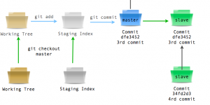
1 > echo "jestem w głównej ścieżce" >> folder1/plik2.txt 2 > git commit -a -m "5th commit" 3 > git branch -v 4 * master b1e1e1b 5 5th commit 6 slave 7 36e4883 4th commit
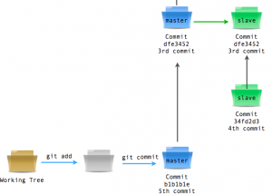
W systemie GIT tworzenie branchy jest tak samo „tanie” jak tagów. To jest jeden z powodów „wyższości GIT nad Subversion” (moim zdaniem). W związku z tanim kosztem utworzenia brancha, niektórzy programiści tworzą je przy każdej okazji (nowy
feature w nowym branchu).
W życiu każdego projektu podzielonego na kilka gałęzi nadchodzi taka chwila, gdzie trzeba będzie się z powrotem połączyć.
Łączenie równoległych gałęzi
Jak już prędzej gdzieś napisałem – łączenie dwóch równoległych gałęzi nazywa się mergingiem(nie podoba mi się spolszczanie angielskich wyrazów, jeśli jednak chodzi o język techniczny to nie mam nic przeciw – bo każdy może sobie przetłumaczyć inaczej i nie zrozumiemy nawet prostych przekazów.)
Łączenia dokonujemy z gałęzi do której łączymy ( przeważnie jest to master, czyli główna linia projektu) i podajemy nazwę brancha, który ma być włączony. Dla przykładu aktualnie jesteśmy w masterze w Commit’cie „5th commit” i chcemy połączyć się z branchem „slave”:
1 > git merge slave 2 Merge made by recursive. 3 plik1.txt | 4 1 5 + 6 1 files changed, 7 1 insertions(+), 8 0 deletions(-)
tym razem obyło się bez problemów.
W gałęzi master został utworzony nowy commit (nazwany "merge branch 'slave'") w którym zostały uwzględnione poprawki z obu gałęzi.
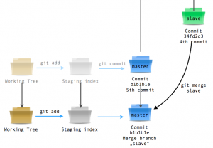
Czasami jednak nie jest tak wesoło. Zwłaszcza gdy w obu ścieżkach wyedytujemy ten sam plik. Spróbujmy wyedytować plik1.txt w obu gałęziach jednocześnie.
1 > echo "master górą" >> plik1.txt 2 > git commit -a -m "6th commit" 3 [master 539525c] 4 > git checkout slave 5 Switched to branch 'slave' 6 > echo "master dołem" >> plik1.txt 7 git commit -a -m "7th commit" 8 [slave 9705a98] 7th commit
Teraz przełączamy się z powrotem do głównej gałęzi i robimy merge
1 > git checkout master 2 Switched to branch 'master' 3 > git merge slave 4 Auto-merging plik1.txt 5 CONFLICT (content): Merge conflict in plik1.txt 6 Automatic merge failed; fix conflicts and then commit the result.
Niestety w równoległej pracy często tak się zdarza, że sa konflikty. Jak je ominąć?
Musimy wyedytować konfliktowy plik. Zobaczymy tam coś takiego:
1 <<<<<<< HEAD:plik1.txt 2 master górą 3 ======= 4 master dołem 5 >>>>>>> slave:plik1.txt
Dopisane zostały wersje z obu plików wraz z nagłówkami, która wersja pochodzi z której gałęzi. W takim wypadku musimy ręcznie usunąć tą wersją, która jest zła, oraz oba nagłówki.
Następnie musimy dodać plik do staging area poprzez git add plik1.txt i to wszystko – po konflikcie.
Na koniec wypada usunąć nieużywaną gałąź używając komendy:
1 > git branch -d slave
i po kłopocie :)